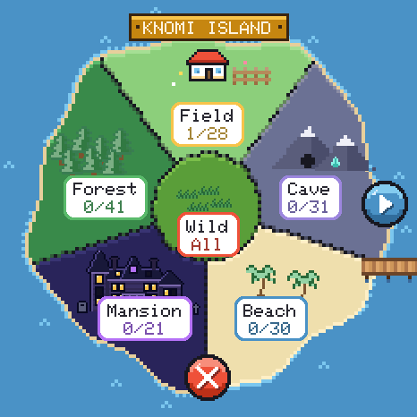
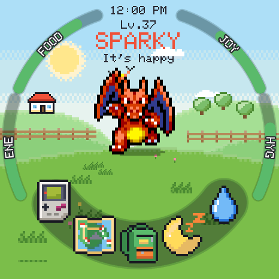
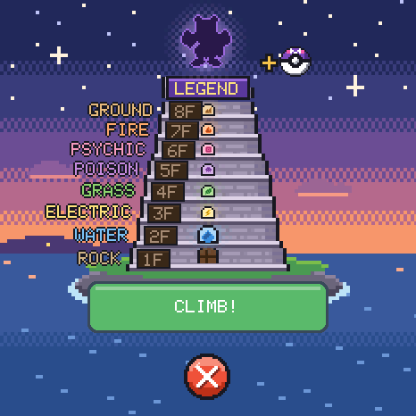
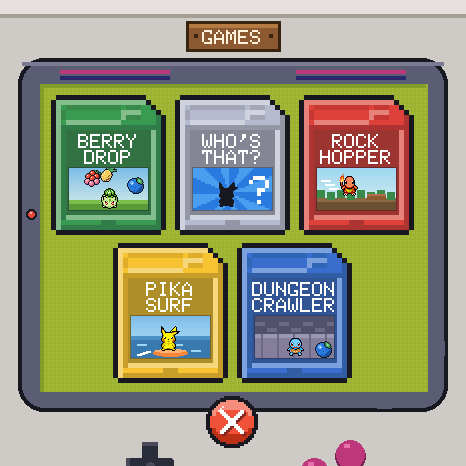
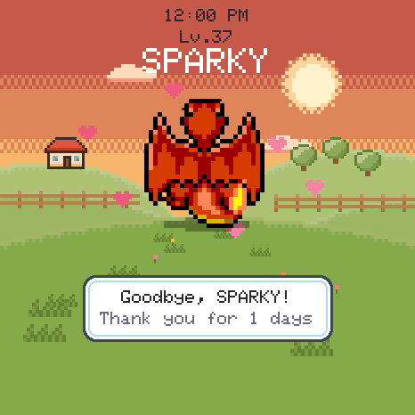

Knomi Island
Every zone has two songs of its own: one while you explore it, one for its wild battles.

Home
Where your Pokémon lives: by day, and the same tune slowed down from dusk to dawn.

Knomi Tower and the big battles
The climb, its guardians, the legends, battles with a buddy, and the fanfare after a win.

The minigames
One for each game in the games menu.

Big moments
Evolving, and saying goodbye.

Made for this game
Every tune is original. Nothing here comes from any other game. Each song is written as notes, a melody, a harmony, a bassline and a drum pattern over its chords, in tools/music/songs.py, checked bar by bar, and turned into the few bytes the game plays (all 28 songs fit in about 40 KB).
The sound of the old handhelds. There are no recordings or samples anywhere: a small synthesizer in the game makes every note as it plays, with the four voices those consoles had:
- Pulse 1, the tune: a square wave, its width setting how it sounds.
- Pulse 2, the harmony and the chords.
- Wave, the bass: a stepped triangle, or the handhelds' 4-bit wave.
- Noise, the drums.
This page runs that same synthesizer and those same songs, built for the browser (a file of about 70 KB), so what you hear is exactly what the game plays. The four scopes at the bottom show each voice as it plays.
Every Pokémon has its own cry, made the same way and worked out from the Pokémon itself: its size and speed set the pitch, its type the rasp and the trill, and a family sounds alike. None is copied from any game. Hear all 151 in the Catch 151 Dex.
The music plays in Catch 151 for Web and the Mac and Windows apps, with its own volume in Settings. The Knomi has no speaker, so it stays quiet.